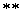
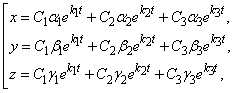
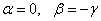
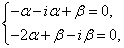
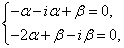
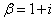
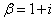
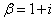
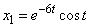

30.4.2. Непосредственное решение
Рассмотрим однородную систему трех ЛДУ с постоянными
коэффициентами для трех неизвестных функций
()
Сформулируем некоторые общие свойства таких систем:
1˚. Если функции являются
решением системы, то функции , где  – любое постоянное число, также являются
решением системы.
– любое постоянное число, также являются
решением системы.
– любое постоянное число, также являются
решением системы.2˚. Если и - решения системы, то являются решением системы.
Справедливость этих свойств устанавливается
непосредственной подстановкой в систему.
3˚. Из вышеприведенных свойств следует, что если , и
являются решениями системы, то их
линейные комбинации также являются решением
системы.
Будем искать ненулевые решения системы () в виде:
()
где и  - некоторые числа, которые нужно
подобрать так, чтобы функции () удовлетворяли
системе ().
- некоторые числа, которые нужно
подобрать так, чтобы функции () удовлетворяли
системе ().
- некоторые числа, которые нужно
подобрать так, чтобы функции () удовлетворяли
системе ().Подставляя функции ()
и их производные в систему, получим:
Получили однородную систему с тремя неизвестными и  .
Для того, чтобы эта система имела ненулевое решение, необходимо и достаточно,
чтобы определитель системы был равен нулю. Таким образом, число должно удовлетворять уравнению:
.
Для того, чтобы эта система имела ненулевое решение, необходимо и достаточно,
чтобы определитель системы был равен нулю. Таким образом, число должно удовлетворять уравнению:
.
Для того, чтобы эта система имела ненулевое решение, необходимо и достаточно,
чтобы определитель системы был равен нулю. Таким образом, число должно удовлетворять уравнению: Характеристическое
уравнение однородной системы трех ЛДУ с постоянными коэффицинтами для трех
неизвестных функций
.
Характеристическое
уравнение однородной системы трех ЛДУ с постоянными коэффицинтами для трех
неизвестных функций
.Это уравнение называется характеристическим уравнением
системы. Оно является уравнением третьего порядка относительно . Имеет три корня и  .
Каждому из этих корней соответствует ненулевое решение системы ; ; , а значит, и ненулевое решение
исходной системы дифференциальных уравнений имеет вид:
.
Каждому из этих корней соответствует ненулевое решение системы ; ; , а значит, и ненулевое решение
исходной системы дифференциальных уравнений имеет вид:
. Имеет три корня и .
Каждому из этих корней соответствует ненулевое решение системы ; ; , а значит, и ненулевое решение
исходной системы дифференциальных уравнений имеет вид:Линейные комбинации этих функций с произвольными
коэффициентами:

также будут решением системы.
Решите систему
Решение:
Характеристическое уравнение имеет вид:
,  .
.
.Корни характеристического уравнения действительные, разные.
Решение ищем в виде: .
При этом . Подстановка
решения такого вида в исходную систему дает:
1˚. : ,
 , коэффициент
, коэффициент  остается
произвольным.
остается
произвольным.
, коэффициент остается
произвольным.Полагая , получим .
2˚. : , коэффициент остается
произвольным.
остается
произвольным.При : ,
.
Общее решение имеет вид:
Решите систему
Решение:
Ищем решение в виде .
Система для нахождения неопределенных коэффициентов и имеет
вид:
имеет
вид:Характеристическое уравнение:
, ,
, , .
Корни характеристического уравнения действительные, разные.
Подставим в систему для нахождения и полученные значения :
полученные значения :1˚. : откуда ,
– любое число; если , получим  , , .
, , .
– любое число; если , получим , , .2˚. : , –
любое число; если , то , , .
–
любое число; если , то , , .3˚. : откуда
, где -
любое число; если , то , и
.
-
любое число; если , то , и
.Общее решение системы принимает вид:
Решите систему
Решение:
Характеристическое уравнение:
,  ,
.
,
.
,
.Корни характеристического уравнения действительные, равные.
Решение ищем в виде:
.
Для него
.
Подстановка этих выражений в исходную систему дает два
равносильных уравнения вида .
Приравнивая коэффициенты в этом уравнении, получаем:
при этом коэффициенты и
остаются произвольными.
Положим, , тогда общее
решение имеет вид:
Решите систему
Решение:
Характеристическое уравнение:
, , .
Корни характеристического уравнения комплексные. Ищем решение
в виде .
Возьмем одно из комплексно-сопряженных значений :
 
уравнения равносильны, , и  остаются
произвольными, пусть, например, , тогда , .
остаются
произвольными, пусть, например, , тогда , .
и остаются
произвольными, пусть, например, , тогда , .По формуле Эйлера
,
поэтому
,
.
За системы частных решений можно взять отдельно действительные
и отдельно мнимые части:
,
;
,
.
Этих функций достаточно, чтобы составить общее решение системы
в виде:

Решите систему
Характеристическое уравнение ,
.
Воспользуемся . Ищем решение в
виде , ,
подстановка такого решения в исходную систему приводит к системе:
двух равносильных уравнений, поэтому и
остаются произвольными, так как
и
остаются произвольными, так как,
положим, например,
, .
Следовательно,
,
.
Действительная и мнимая части этого решения также являются
решениями исходной системы, а их линейная комбинация с произвольными
коэффициентами является общим решением: